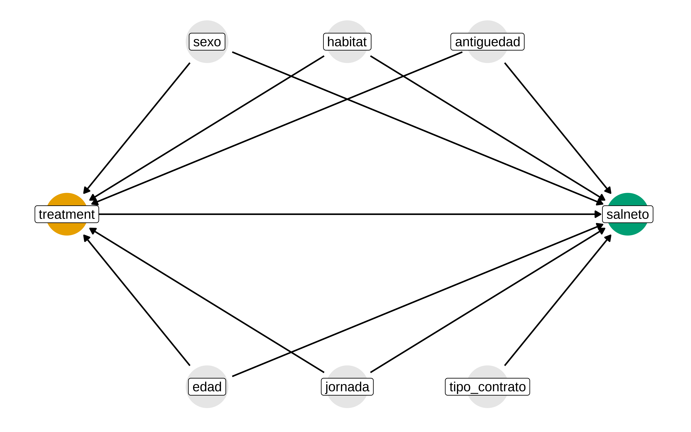

Inverse probability weighting. ESS
El objetivo de esta técnica es conseguir unos pesos que al aplicarlos los datos se parezcan lo más posible a los que hubiéramos tenido si hubiéramos hecho un diseño experimental.
El diseño experimental siempre va a ser mejor, puesto que va a permitirnos equilibrar incluso aunque hubiera variables de confusión no medidas.
No obstante, si hay suficientes variables relacionadas con la probabilidad de recibir el tratamiento, el uso de esta técnica puede dar buenos resultados, incluso en diseños experimentales.
Datos
Son datos de la encuesta de estructura salarial del INE. Existe cierta representatividad, el INE provee unos pesos que permiten hacer ciertas inferencias, pero puede que no todas.
Leemos y calculamos ciertas cosas como el salario neto. Estas cosas vienen en la documentación y nota metodológica.
La variable control indica cuando es 1 que es sector público y 2 cuando es privado
¿Se gana más en el sector público o en el privado?
Asumiendo que la ponderación del INE nos da representatividad.
Si queremos obtener correctamente los errores estándar y los intervalos de confianza, podemos usar la librería survey.
Pues nos sale que en el sector público se gana más. Pero, ¿para un sector en concreto y con nivel de estudios determinado podemos decir lo mismo? ¿ y se aplican los mismos pesos?
Pregunta causal
Vamos a plantearnos una pregunta causal más concreta. Para aquellos que están en el sector sanitario CNAE = Q0, y con nivel educativo de diplomados, ¿Estar en el sector público “causa” que se gana más salario neto?
Qué asunciones podemos hacer, qué variables pensamos que afectan, de entre las que tenemos observadas
Dado que hemos fijado el sector CNAE y el nivel educativo, podríamos pensar en otras variables como el sexo, edad, habitat del municipio, tipo de jornada, años de antiguedad, tipo de contranto
Podríamos pensar que algunas de estas variables podrían ser variaables de confusión, es decir, afectan a si se está en un determinado sector y también pueden afectar al salario neto. Si tienes más años de antigüedad, pudiera ser que sea más probable estar en el sector público y además tener mayor salario.
Si se hubiera podido hacer un diseño experimental habríamos asignado aleatoriamente a los individuos a un sector u otro, y la distribución de estas variables serían similares en ambos grupos.
Grafo casual
Show the code
ess_dag <- dagify(
salneto ~ treatment + sexo + edad + habitat + jornada + antiguedad + tipo_contrato,
treatment ~ edad + sexo + habitat + jornada + antiguedad,
exposure = "treatment",
outcome = "salneto",
coords = list(
x = c(
salneto = 7,
treatment = 3,
sexo = 4,
edad = 4,
habitat = 5,
jornada = 5,
antiguedad = 6,
tipo_contrato = 6
),
y = c(
salneto = 0,
treatment = 0,
sexo = 1,
edad = -1,
habitat = 1,
jornada = -1,
antiguedad = 1,
tipo_contrato = -1
)
),
labels = c(
salneto = "Salario neto",
treatment = "Sector (público/privado)",
sexo = "sexo",
edad = "edad",
habitat = "Tamaño municipio",
jornada = "Jornada completa o parcial",
antiguedad = "Años de experiencia",
tipo_contrato = "tipo de contrato (indefinido, temporal)"
)
)
p1 <- ess_dag |>
tidy_dagitty() |>
node_status() |>
ggplot(
aes(x, y, xend = xend, yend = yend, color = status)
) +
geom_dag_edges() +
geom_dag_point() +
geom_dag_label(color = "black") +
# geom_dag_label_repel() +
scale_color_okabe_ito(na.value = "grey90") +
theme_dag() +
theme(legend.position = "none") +
coord_cartesian(clip = "off")
p1
Solapamiento
En primer lugar seleccionamos el subgrupo que vamos a estudiar.
Veamos si hay solapamiento.
edad es variable categórica. Viendo la proporción de gente en cada grupo de edad y sector, se ve que hay solapamiento, pero la distribución es bastante diferente.
Años de antigüedad.
Probad a ver la distribución de habitat (estrato2) o tipo de contrato (tipo_con)
Una forma de ver si el “peso” que da la encuesta del INE es adecuado para ver si corrige el desbalanceo es calcular las diferencias estandarizadas aplicando ese peso y compararlas con las de sin aplicar
SMDs
Lo podemos ver un “love plot”
En este caso, como el peso de la encuesta está pensado para dar representatividad de la población española, no nos vale para contestar a la pregunta causal planteada.
Inverse probability weighting
Modelamos el tratamiento en función de las covariables que pensamos que pueden ser de confusión
Usamos una regresión logística, pero como se ha comentado antes, podría ser otro modelo
Aplicamos los pesos
¿Este peso ha conseguido balancear las covariables ?
Algunas preguntas. ¿Qué pasa si añadimos el tipo de contrato al modelo del tratamiento? ¿El tipo de contrato es una variable de confusión, habría que estratificar?
Estimación del efecto
Para estimar el efecto usando ipw, podemos hacer simplemnente la media ponderada.
También podemos usar un modelo lineal, y nos evitamos hacer bootstrap usando la librería survey
Que comparado con no usar ipw, vemos que da un efecto más pequeño, pero en el mismo sentido
Y si usamos los pesos de la encuesta, el efecto es mayor aún.
¿Y si ajustamos además por tipo de contrato?
Podemos ver el efecto dentro de cada nivel de tipocon
Y sin ipw
Por eso es importante definir bien la pregunta causal y dónde se aplica, además de tener en cuenta que con la inferencia causal queremos responder a “¿qué habría pasado si..?”. Una de las mejores formas es hacer un RCT, pero no siempre es posible, técnicas como el ipw intentan crear una pseudo población que se parezca a lo que se obtendría haciendo un RCT
Resumen
Efecto sobre el salario en sector sanitario y máximo estudios diplomados. ¿cuánto más se gana en sector público vs privado?
- Modelo sin peso, sin condicionar por variables: 727
- Modelo sin peso, condicionando por variables: 388
- Modelo con pesos ine, sin condicionar por variables: 787
- Modelo con pesos ine, condicionando por variables: 323
- Modelo con ipw, sin condicionar por variables: 343 ( 284, 402)
- Modelo con ipw, condicionando además por
tipocon: 515 ( 445, 585)
¿Cuál es el verdadero efecto? Yo no lo sé, pero en las técnicas de inferencia causal al menos se explicitan las asunciones ( grafo), se analiza solapamiento, positividad, etc. En ausencia o imposibilidad de realizar un RCT es lo mejor que tenemos.